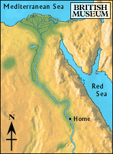

Desert

The boy turned away from the lake. He walked through the fertile land until he reached the edge of the desert.
He walked for many days in the desert, stopping to rest when he was too tired to walk anymore. The sun was hot and his supplies were heavy. He did not know when he would reach the oasis.
Should he keep going towards the oasis, or turn back towards the Faiyum?